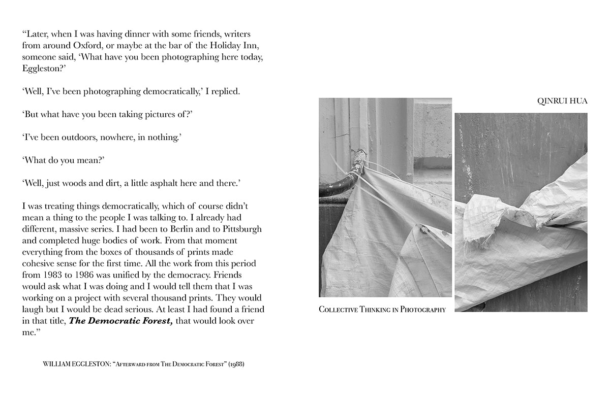
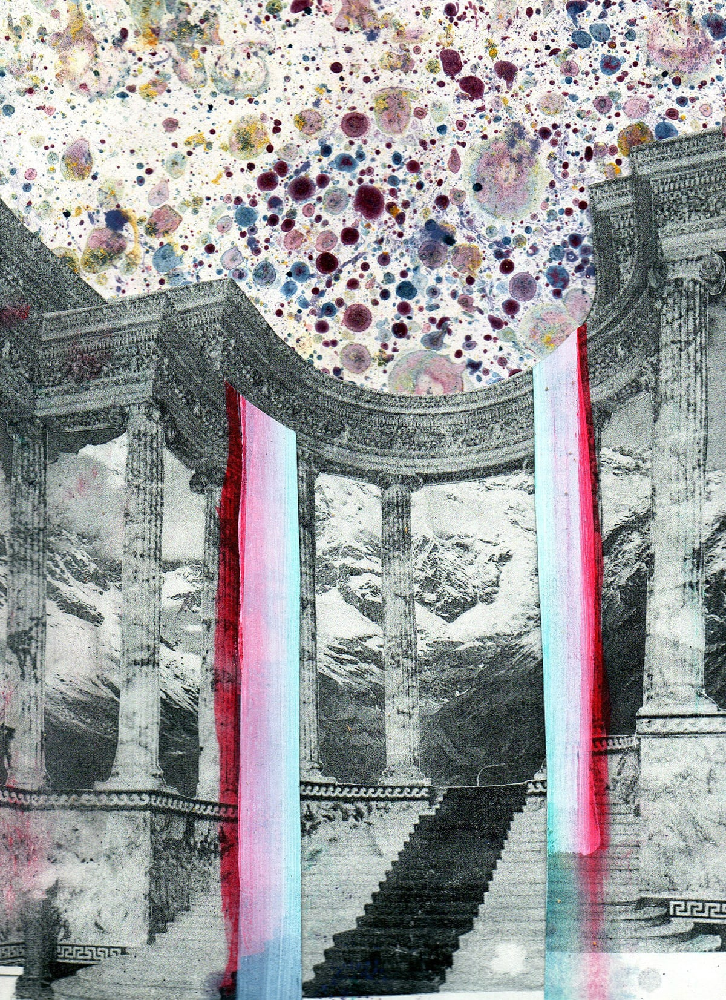

Publication
July 27, 2017
Spike Art Quarterly
Rosa-Luxemburg-Straße, 45, Berlin
author, editor
Exploring contemporary methods of information dispersion and dialogic inquiry, Ohne prickelnd, sanft took the form of a zine dealing with key questions regarding art and the politics of collectivity and featuring contributions from 33 artists, curators and writers.
The zine was launched during the opening of an exhibition of the same title at Spike Art Quarterly in Berlin.
Aryana Ghazi-Hessami, Ashley Fleshman, Billy Bultheel, Chase Bucklew, Dora Durkesac, Francis Baptiste Haselden, Giulia Giannola, Jack Hogan, Jacquelene Drinkall, Jennifer Russell, Josefina Labourt, Katya Gardea, Kim Cordova, Laurel McLaughlin, Louise Thomas, Luciano Zubillaga, Lynne Margaret Brown, Meg Alvarado Saggese, Merle Richter, Mirland Terlonge, Nikolay Alutin, Nina Wexelblatt, Paula Bruzzi Berquo, Pia Singh, Qinrui Hua, Sandra Wazaz, Teresa Flores, Valentina Sarmiento Cruz, Vera Jane Seegers, Vesna Salamon, Yana Mikhalina, You Feng
Louise Thomas
Qinrui Hua
Jack Hogan